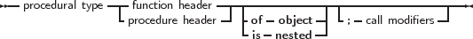
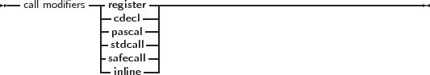

Free Pascal has support for procedural types, although it differs a little from the Turbo Pascal or Delphi implementation of them. The type declaration remains the same, as can be seen in the following syntax diagram:
_________________________________________________________________________________________________________
Procedural types


___________________________________________________________________
For a description of formal parameter lists, see chapter 14, page 680. The two following examples are valid type declarations:
One can assign the following values to a procedural type variable:
Given these declarations, the following assignments are valid:
From this example, the difference with Turbo Pascal is clear: In Turbo Pascal it isn’t necessary to use the address operator (@) when assigning a procedural type variable, whereas in Free Pascal it is required. In case the -MDelphi or -MTP switches are used, the address operator can be dropped.
Remark: The modifiers concerning the calling conventions must be the same as the declaration; i.e. the following code would give an error:
Because the TOneArgCcall type is a procedure that uses the cdecl calling convention.
In case the is nested modified is added, then the procedural variable can be used with nested procedures. This requires that the sources be compiled in macpas or ISO mode, or that the nestedprocvars modeswitch be activated:
In case one wishes to assign methods of a class to a variable of procedural type, the procedural type must be declared with the of object modifier.
The two following examples are valid type declarations for method procedural variables (also known as event handlers because of their use in GUI design):
A method of the correct signature can be assigned to these functions. When called, Self will be pointing to the instance of the object that was used to assign the method procedure.
The following object methods can be assigned to oproc and ofunc:
When calling oproc and ofunc, Self will equal M.
This mechanism is sometimes called Delegation.
Remark: When comparing 2 method procedural variables, only the method is compared, not the instance pointer. That means that the following program will print True:
If both pointers must be compared, a typecast to TMethod must be done, and both pointers should be compared.